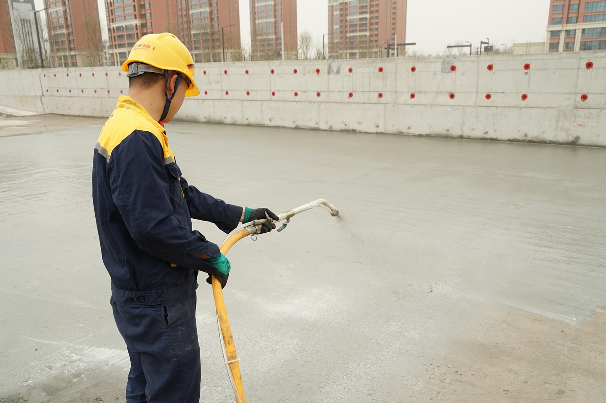
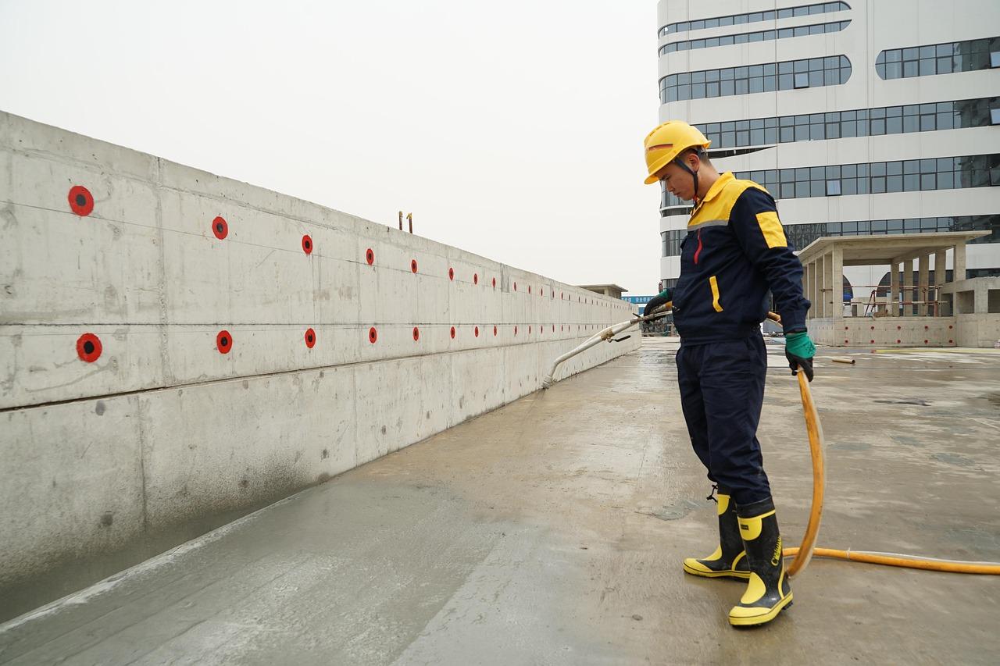
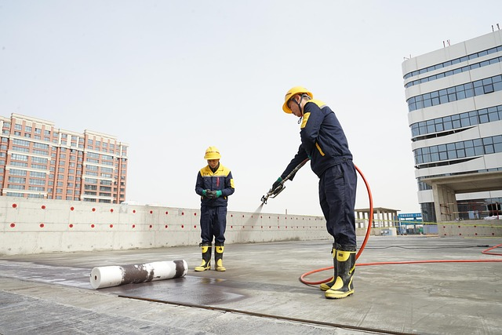
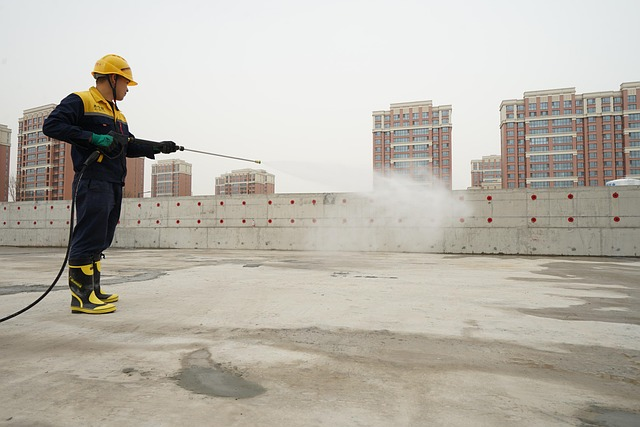

Подвалы и паркинги
Устраняем протечки стен, полов, вводов коммуникаций, рабочих и деформационных швов.
Работаем с 1995 года
Обследуем объект, подберем технологию ремонта и заранее сориентируем по срокам, материалам и стоимости работ.
О нас
Ustaz NS выполняет гидроизоляцию, инъектирование трещин, усиление конструкций и защиту бетонных оснований. Мы подбираем технологию под фактическое состояние объекта, а не используем одно решение для всех случаев.
Перед стартом уточняем задачу, оцениваем условия работ, согласуем материалы и фиксируем понятный план выполнения.
Объекты

Устраняем протечки стен, полов, вводов коммуникаций, рабочих и деформационных швов.

Усиливаем несущие элементы, восстанавливаем поврежденные участки и укрепляем основания.

Защищаем резервуары, цеха, технические помещения, тоннели и инженерную инфраструктуру.
Принципы
Фиксируем понятную смету и не меняем правила после начала работ.
Планируем этапы так, чтобы объект не простаивал без причины.
Используем проверенные материалы и технологии с прогнозируемым результатом.
Контролируем подготовку основания, нанесение материалов и финальную приемку.
Беремся за сложные случаи, где важно учитывать конструкцию и условия эксплуатации.
Оставляем площадку организованной и удобной для дальнейших работ.
Выполняемые работы
Примеры

Для предварительной оценки подготовьте фото объекта, размеры участка и краткое описание проблемы.
Получить расчетПодход
Сначала уточняем тип объекта, характер дефекта, условия доступа и ожидаемый результат. Если есть фотографии или проект, они помогают быстрее оценить объем работ.
После первичной консультации предлагаем технологию, ориентировочную смету и, если нужно, выезд специалиста для точного обследования.
Контакты
Ответим на вопросы, уточним детали объекта и подскажем следующий шаг.